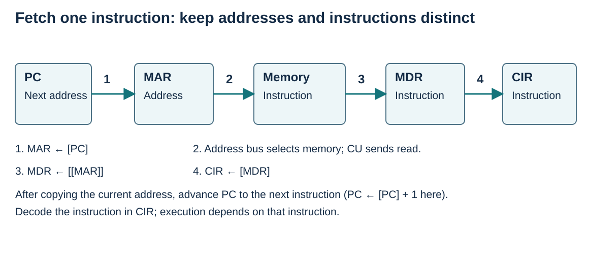

Fetch using register-transfer notation
Visual overview
Instruction fetch: address and value transfers

Visual transcript
- MAR ← [PC] selects the instruction address.
- A read signal causes MDR ← [[MAR]].
- CIR ← [MDR] retains the fetched instruction.
- PC ← [PC] + 1 advances the sequential address independently of the instruction transfer.
In this notation [PC] means the contents of PC, while [[MAR]] means the contents of the memory location whose address is in MAR. Thus MAR ← [PC] copies an address; MDR ← [[MAR]] reads the selected memory contents. The left arrow copies a value to its destination.
The fetch selects the current instruction address before advancing PC. In this teaching sequence, copy PC into MAR, issue a memory read and receive the instruction in MDR, copy it into CIR, then advance PC by one and decode CIR. Some internal transfers can overlap on real processors; the address must still identify the intended instruction.
Fetching LDD 4 reads the instruction at address 0. Executing it then reads the data at address 4. Those are two separate memory reads. Fetching STO 6 still reads its instruction; only its execution writes the result to memory.
Worked example · Fetch the first instruction of the calculation
- Given
PC=0, ACC=0, IX=0. Memory[0]=LDD 4 and Memory[4]=18. MAR, MDR and CIR will be overwritten; the comparison result is unset.
- Select and read
MAR ← [PC] gives 0. The address bus selects 0; the CU sends read. MDR ← [[MAR]] receives the encoded LDD 4 instruction on the data bus.
- Retain and advance
CIR ← [MDR] retains LDD 4; PC ← [PC]+1 gives 1. The CU decodes LDD. ACC is still 0: the data at address 4 has not been loaded yet.
Core explanation · Exam essentials
- MAR ← [PC]; read into MDR; CIR ← [MDR]; advance PC; decode CIR. Distinguish register contents from memory contents.